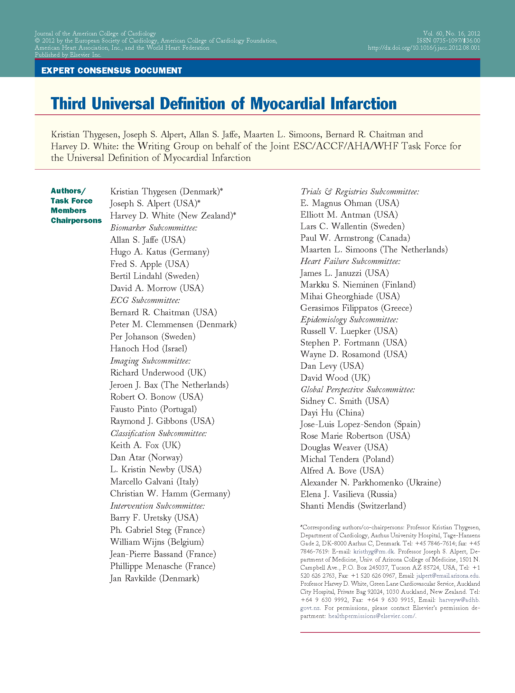

Third Universal Definition of Myocardial Infarction
The preferred biomarker—overall and for each specific category of MI—is cTn (I or T), which has high myocardial tissue specificity as well as high clinical sensitivity. Detection of a rise and/or fall of the measurements is essential to the diagnosis of acute MI.6
I is not superior to T.
The guidelines for the Definition of Myocardial Infarction call out both I and T.6
- I is not superior to T.
The preferred biomarker is cardiac troponin (I or T), which has high myocardial tissue specificity as well as high clinical sensitivity.4
- Detection of a rise and/or fall of the measurements is essential to the diagnosis of acute MI.
Evidence based data supports the use of assays with a CV of ≤ 20% at the 99th percentile.7